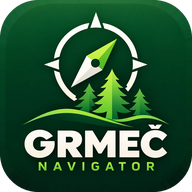

Tačke i fotografije su samo na ovom uređaju (rade bez interneta). KMZ sa fotografijama otvaraju Google Earth, QGIS i ova aplikacija.
Odaberi baznu kartu ili učitaj vlastite offline karte i vektorske slojeve. Učitani podaci ostaju prikazani na glavnoj mapi.
Poligoni, linije i tačke iz .kml / .kmz; SHP uz .dbf i .prj.
Karta nagiba po rasponima i mjerenje nagiba poligona linijama niz padinu.
Brzo promijeni podlogu bez vraćanja na mapu.
Protomaps ključ podešava se u Postavkama.
DEM prikaz; pregledane visinske pločice dostupne su i offline. Nagib do 5 % je ravan teren — bez ekspozicije i bez boje.
Oboji odjele ili odsjeke prema numeričkim atributima iz .gpkg fajla.

Omogućava Protomaps online podlogu u izboru karata.
Kopija (.json) sadrži tragove, mjerenja, KML slojeve, trase, mjerenja nagiba, postavke i API ključeve — ne dijeli je. Offline karte (.mbtiles) nisu u kopiji; to su već fajlovi na telefonu. Korisno pri prelasku na novi telefon.
Uređaj ID — pošalji administratoru za pristup dijeljenim ključevima.
nema interneta / Firebase nije podešenZa GPS poziciju (ako je Moja lokacija uključena), inače za centar karte. Vlažnost tla 0–7 / 7–28 / 28–100 cm prema višegodišnjem prosjeku, temperatura tla i razvoj smrekovog potkornjaka (Ips typographus).
Postavi A i B — trasa nikad ne prelazi maksimalni uzdužni nagib (šestarski korak L = ΔH / nagib). Teren: Copernicus DEM 30 m (offline za 5 općina).
Ili iz sačuvane površine (📏 Mjerenja) ili učitanog KML poligona.
Velike rasterske karte za rad bez signala. Ostaju na uređaju; aktivna se sama vraća pri pokretanju.
Granice odjela, putevi, tačke… Poligoni se mogu dodirnuti za izvještaj odjela i nagib.
Za SHP označi zajedno istoimene .shp, .dbf i .prj (.prj treba za lokalnu projekciju).
Boje po rasponima preko cijele karte
Granica se unosi u procentima (100 % = 45°); stepeni se računaju sami. Isključi raspon da se ne boji na karti — npr. ostavi samo 30–50 % (17–27°).
Linije od vrha do podnožja padine, nagib svake linije i prosjek poligona. Linije se mogu pomjerati, a mjerenje sačuvati.